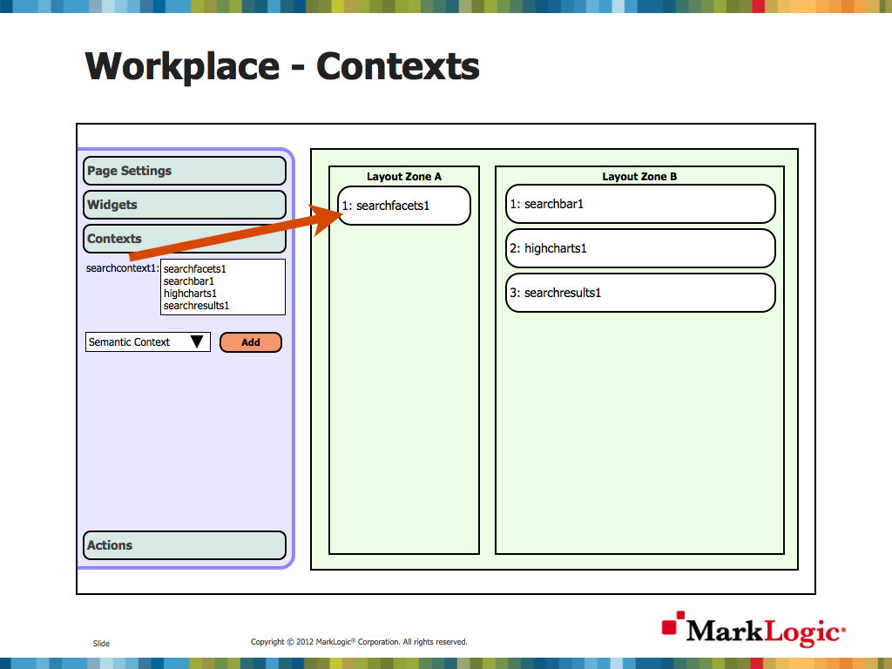
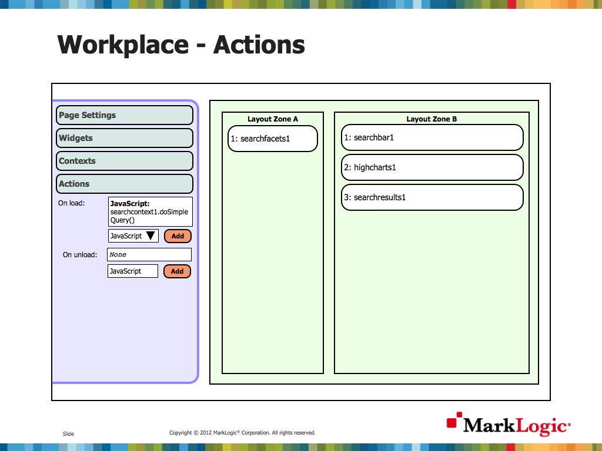

Workplace - An MLJS application without coding
One I created a whole bunch of widgets with test pages that you could mix together on a page there was an obvious next step. I knew that I had applied the same rendering pattern across all widgets, and knew I wanted to implement a setConfiguration() method to pass JSON configuration consistently to complex widgets.
I also knew that not everyone is an avid JavaScript coder capable of writing even the 20-30 lines required for an MLJS page.
One of my first jobs after graduation was developing for a Java Portal. Also, something I missed from my first pre-sales job was configuring widgets someone else had developed within a page to create an end user 'workplace' with all of their information at their finger tips.
Having this configurable within the web browser via point and click, with a page for 'editing' widget settings, and another for 'viewing' the widget is a core tenet behind J2EE portlet containers.
I wanted to bring the same functionality to MLJS but without a large infrastructure on the server. I decided I could use my standard widget configuration pattern to define concepts of a 'page' with a 'layout', and assign widgets to particular areas of that layout.
Thus the concept of a configurable Workplace was born... A page with a single configured widget (The Workplace) that either loads the page configuration from the server based on the current URL, or provides an 'edit' button to allow the users themselves to drag and drop a palette of widgets on to the page.
Configuration
A page, its widgets, contexts and onload actions can be configured within a straightforward and consistent JSON structure. Below is an example of that configuration for a search page with searchbar, chart, results and facets all shown:-
var page = { title: "Workplace test page", layout: "thinthick", urls: ["/mljstest/workplace/","/mljstest/workplace","/mljstest/workplace.html"], widgets: [
{widget: "searchfacets1", type: "com.marklogic.widgets.searchfacets", config: {
listSize: 5, extendedSize: 10, allowShowAll: true, hideEmptyFacets: true
}},
{widget: "searchbar1", type: "com.marklogic.widgets.searchbar", config: {}},
{widget: "highcharts1", type: "com.marklogic.widgets.highcharts", config: {
title: "Animal Family", subtitle: "", xTitle: "Family", yTitle: "Count", type: "pie",
series: [{nameSourceType: "fixed",nameSource: "Family",autoCategories: true,categorySourceType: "facet",
categorySource: "family", valueSourceType: "element", valueSource: null, aggregateFunction: "none"
}]
}},
{widget: "searchresults1", type: "com.marklogic.widgets.searchresults", config: {selectionMode: "append"}},
{widget: "selection1", type: "com.marklogic.widgets.selection", config: {}}
], assignments: [
{widget: "searchfacets1", zone: "A", order: 1},
{widget: "searchbar1", zone: "B", order: 1},
{widget: "highcharts1", zone: "B", order: 2},
{widget: "searchresults1", zone: "B", order: 3},
{widget: "selection1", zone: "A", order: 2}
], contexts: [
{context: "searchcontext1", type: "SearchContext", register: ["searchfacets1","searchbar1","highcharts1","searchresults1","selection1"], config: {
options: options, optionsName: "mljs-search-pie-hybrid", sortWord: "sort",
defaultQuery: "", collection: "animals,testdata", directory: null, transform: null, format: null
}}
], actions: {
onload: [
{type: "javascript", config: {targetObject: "searchcontext1", methodName: "doSimpleQuery", parameters: []}}
]
}};
var workplace = new com.marklogic.widgets.workplace("workplace");
workplace.loadPage(page);This may look complicated, but when you consider this is setting up an entire page with 4 widgets, 1 layout, 1 context, and an initial search action on page load, it's actually pretty straightforward.
Also, the ultimate aim is for this JSON to be created visually via drag and drop, not in code as in the above example. This JSON would be stored on MarkLogic server and loaded based on the URL of the page (as you can see on the first line with /mljstest/workplace).
Drag and drop
Below are mock ups of the edit screen for the MLJS Workplace.

The basic page screen allows assignment of the top level layout, page name, and URLs this page should match against. In future this will also include read (view page) and modify (edit page configuration) permissions.

This section is a drag and drop assignment of widgets to layout zones. Note the appending functionality in all zones in this layout. Some layout (E.g. grid) may have a fixed maximum number of zones.
In this mock up only the widget ID is shown, but in the real screen this is where you would be able to edit widget settings.

This is where contexts are assigned to widgets. This is the equivalent of calling the context.register(widget) function. Note that it is possible for contexts to be chained together. E.g. a semantic search widget may be linked to a content search widget in order to search for all documents linked to a Subject (via a mentioned_in predicate to a MarkLogicDocument RDF Type - basically a document-uri query).

This page shows actions configured. At the moment this is limited to on page load actions, but could be extended in the future to include
any events exposed by any widgets, and a variety of out of the box actions (E.g. 'go to page